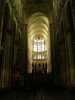
Amiens, célèbre par sa cathédrale (gothique, voûte record de 42,30 m de haut !) le sera-t-il bientôt par ses indoors ? Cette fois, c'est dans le "Coliseum" grand édifice multifonction avec une piscine et son aquacenter, 2 patinoires, un gymnase, et bien d'autres salles à destination diverses. Nous, c'est dans le gymnase que ça se passe. Un gymnase avec des gradins pour un public nombreux...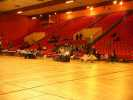
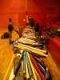
Dominique Miquet a déjà installé son stand, des toiles des raccords, de la ficelle, des poignées...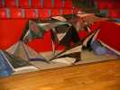
... mais aussi des cerfs-volants tout faits, à tous les prix (enfin pas trop bas, des trucs séreux quand même).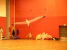
Moi, j'ai monté mes oiseaux, même Albatros 2 pour décorer. Quoique... on me l'a fait voler, oui, dans le gymnase, pour impressionner FR3, France bleue et autres reporters qui sont venus. Mais les demi-tours, c'est pas ça !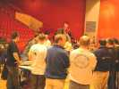
Briefing pour les pilotes. Au douzième appel (normal, comme d'hab, quoi !) tout le monde est là... mais écoute plus ou moins attentivement. On va varier un peu, comme à Dieppe : pas d'imposées, ballet-mystère, ballet, shows libres, crevé de ballons...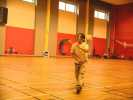
Yann se démène comme un beau diable, dans son style dansé inimitable.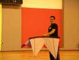
Damien est le premier des 4 lignes à passer. Ils ont droit à leur révo perso, eux. En 2 lignes, le CV est imposé, moyennement apprécié, d'ailleurs, mais c'est toujours les meilleurs qui s'en tirent...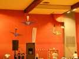
Dans les shows, Cramayel présente toujours les Malards de Louis, au bout de grandes cannes à pêche qui permettent d'assurer la démo, et avec un rythme majestueux !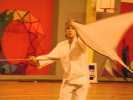
Yann volera aussi avec ses oiseaux, un d'abord...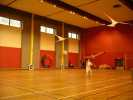
Puis deux comme ici, et enfin 3, la canne du troisième entre les dents !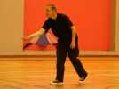
Elmuth est encore là, mais il repart en Allemagne ce soir. Il manie toujours ses mini-deltas avec maestria...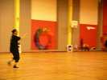
En costume de show, il montre que ses machines passent aussi les "fades"...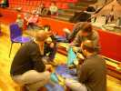
Les shows, c'est bien, mais nous on a du boulot : 60 CVs à assembler et brider pour faire 5 trains de 12 (pour l'outdoor, bien sûr) !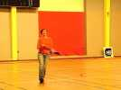
Mais les compètes, faut assumer. Cette charmante débutante ne s'en sortira pas mal dans ce monde de brutes...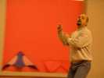
Patrick lui est dans les bons, tant en compète qu'en show...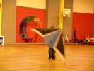
Et un Maxime en pleine action ! Ca se galvaude, on est 3 Maxime, maintenant, on ne sait plus où donner de la tête quand Dominique appelle !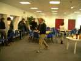
Parmi les nombreuses salles du centre, celle-ci, où nous déjeunerons. Elle domine la patinoire et la piscine. Apéritif, cidre, jus de fruits, cahuètes, chips... Puis un bon sauci-pain (selon le JO. C'est un hot dog, quoi !) et une pomme, une bière si on veut. Mais il ne faut pas traîner, une heure d'arrêt maxi...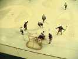
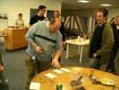
Au dessert, Dominique sort ses enveloppes pour jouer à "A prendre ou à laisser" : on tire 4 enveloppes et on choisit par étapes laquelle garder ! Il y a pas mal de beaux lots : des CVs, des sacs à CV, et des gadgets divers...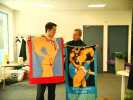
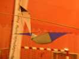
La caméra n'est pas bien grosse, même avec son alim et son transmetteur, et scotchée au milieu de la vergue.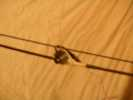
En détail, pas facile, on la voit quand même... nous voir !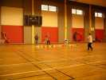
Ca n'est pas si facile et certains passeront 4 fois sur les ballons sans descendre assez bas pour en ramasser un. Total ZERO !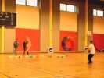
Il faut se forcer à bien descendre, les ballons ne sont pas gros...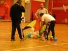
Patrick adopte une tactique astucieuse mais pas très fair-play : il met l'aiguille à la pointe, pose le CV par terre à cheval sur la ligne des ballons et tire, l'aiguille ramasse tout ! La prochaine fois, faudra améliorer le règlement !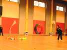
Damien, malgré sa grande adresse, n'obtiendra pas un résultat mirobolant...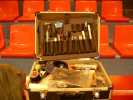
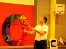
Mais faut aussi avancer la compète pour terminer avant 5 heures et avoir le temps pour la surprise...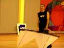
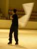
Cinq heures, l'heure de la surprise ! On descend sur la patinoire et un certain nombre vont lancer mondialement le "cerf-volant indoor sur glace". Quelques chutes, mais rien de cassé ! Faudra s'entraîner dur les indooristes !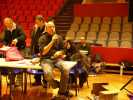
Mais Dominique est triste. Il prend le micro pour dire qu'il n'organisera plus d'indoors à cause de querelles de personnes, enfin, c'est pas très clair, il ne veut nommer personne, mais... ! Alors on est triste avec lui... Mais on reviendra, sûr qu'il ne pourra pas s'en passer, et puis Hubert continuera, lui... Merci à tous, en tout cas.